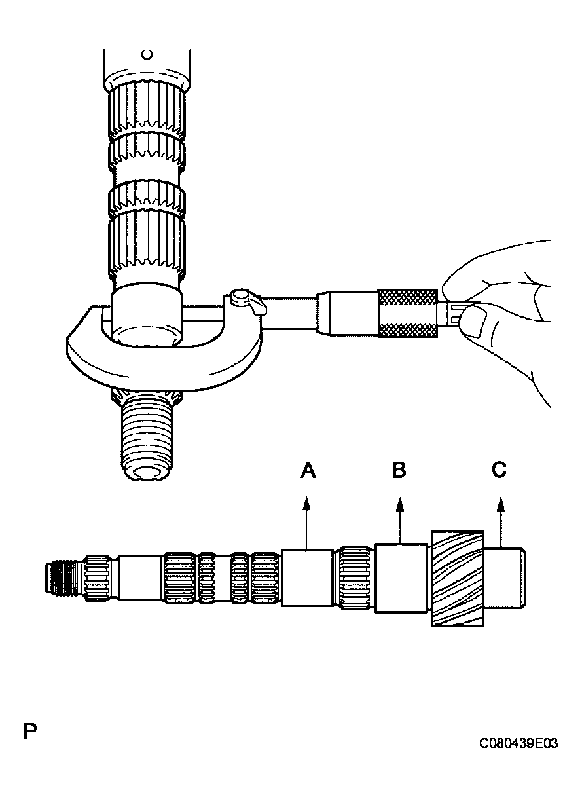
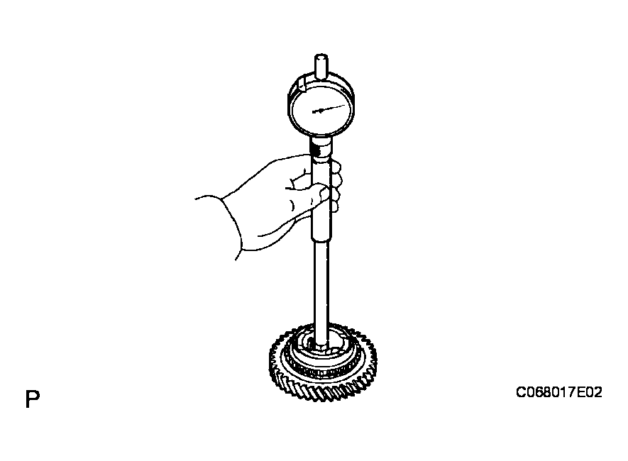
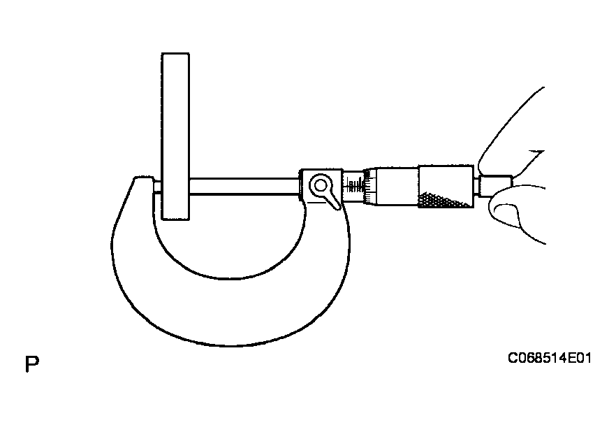
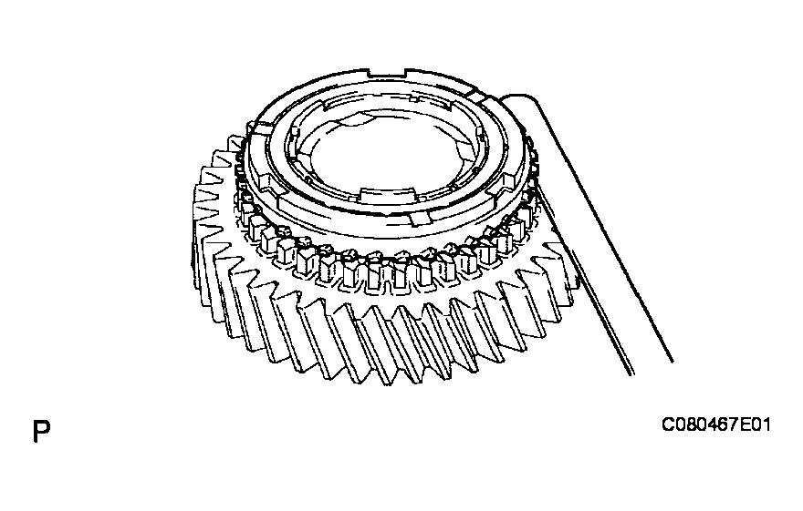
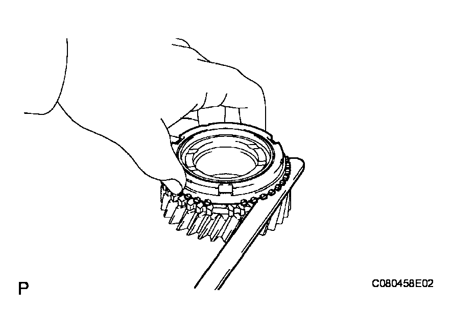

Output Shaft: Inspection
- INSPECT OUTPUT SHAFT
- Using a dial indicator and 2 V-blocks, measure the output shaft runout.
Maximum runout: 0.015 mm (0.0006 in.)
If the runout is greater than the maximum, replace the output shaft.
- Using a micrometer, measure the diameter of the output shaft journal surface.

Courtesy of © TOYOTA, LICENSE AGREEMENT TMS1002Standard diameter
DIAMETER SPECIFICATIONJournal Position Specified Condition A 31.985 to 32.000 mm (1.2592 to 1.2598 in.) B 37.985 to 38.000 mm (1.4955 to 1.4961 in.) C 32.985 to 33.000 mm (1.2986 to 12.992 in.) If the diameter is less than the minimum, replace the output shaft.
- Using a dial indicator and 2 V-blocks, measure the output shaft runout.
- INSPECT 2ND GEAR
- Using a cylinder gauge, measure the inside diameter.Courtesy of © TOYOTA, LICENSE AGREEMENT TMS1002
Standard inside diameter: 38.015 to 38.031 mm (1.4967 to 1.4972 in.)
Maximum inside diameter: 38.031 mm (1.4972 in.)
If the inside diameter is greater than the maximum, replace the 2nd gear.
- Using a cylinder gauge, measure the inside diameter.
- INSPECT 1ST GEAR
- Using a cylinder gauge, measure the inside diameter.

Courtesy of © TOYOTA, LICENSE AGREEMENT TMS1002Standard inside diameter: 44.015 to 44.031 mm (1.7328 to 1.7335 in.)
Maximum inside diameter: 44.031 mm (1.7335 in.)
If the inside diameter is greater than the maximum, replace the 1st gear.
- Using a cylinder gauge, measure the inside diameter.
- INSPECT 1ST GEAR THRUST WASHER
- Using a micrometer, measure the thickness.

Courtesy of © TOYOTA, LICENSE AGREEMENT TMS1002Standard thickness: 5.975 to 6.025 mm (0.2352 to 0.2372 in.)
Minimum thickness: 5.975 mm (0.2352 in.)
If the thickness is less than the minimum, replace the 1st gear thrust washer.
- Using a micrometer, measure the thickness.
- INSPECT NO. 1 SYNCHRONIZER RING (for 2nd Gear)
- Coat the 2nd gear cone with gear oil. Turn the synchronizer ring in one direction while pushing it against 2nd gear cone. Check that the ring locks. If the synchronizer ring does not lock, replace the ring or 2nd gear.
- Using a feeler gauge, measure the clearance between the synchronizer ring back and gear spline end.

Courtesy of © TOYOTA, LICENSE AGREEMENT TMS1002Standard clearance: 0.75 to 1.65 mm (0.0295 to 0.0650 in.)
Minimum clearance: 0.75 mm (0.0295 in.)
If the clearance is less than the minimum, replace the synchronizer ring.
- INSPECT NO. 1 SYNCHRONIZER RING (for 1st Gear)
- Coat the 1st gear cone with gear oil. Turn the synchronizer ring in one direction while pushing it against the 1st gear cone. Check that the ring locks. If the synchronizer ring does not lock, replace the ring or 1st gear.
- Using a feeler gauge, measure the clearance between the synchronizer ring back and gear spline end.

Courtesy of © TOYOTA, LICENSE AGREEMENT TMS1002Standard clearance: 0.75 to 1.65 mm (0.0295 to 0.0650 in.)
Minimum clearance: 0.75 mm (0.0295 in.)
If the clearance is less than the minimum, replace the synchronizer ring.
- INSPECT REVERSE GEAR
- Using a vernier caliper, measure the width of the reverse gear groove (A) and the thickness of the claw part on the reverse shift fork (B), and calculate the clearance.
Standard clearance:
A - B = 0.15 to 0.35 mm (0.0059 to 0.0138 in.)
- Check that the spline gear edges of the reverse gear are not worn down.
- Using a vernier caliper, measure the width of the reverse gear groove (A) and the thickness of the claw part on the reverse shift fork (B), and calculate the clearance.
- INSPECT NO. 1 TRANSMISSION CLUTCH HUB
- Check that the No. 1 transmission clutch hub and reverse gear slide smoothly.
- Check that the spline gear edges of the reverse gear are not worn down.